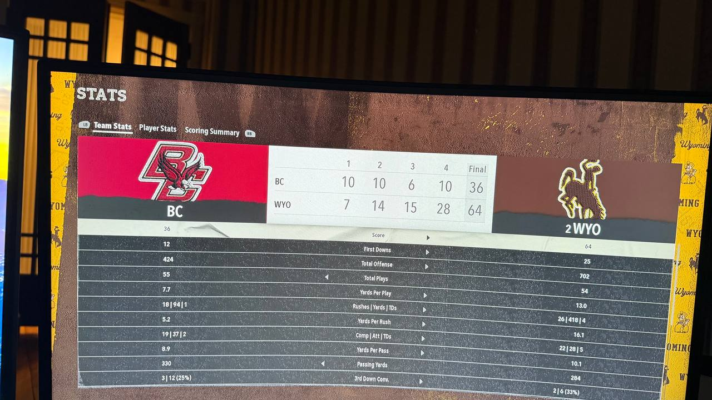

LARAMIE, WY — For about 47 glorious minutes, Charlie Kirk was the happiest man in college football. His #2 Wyoming Cowboys had just curb-stomped Boston College 64-36 to move to a perfect 9-0 on the season, his Heisman-caliber QB Brady Hart was lighting up the Eagles secondary like a Hanukkah menorah, and his offense had just dropped 702 total yards on a Power 4 opponent. Kirk strolled into the postgame press conference grinning, yarmulke crooked, ready to thank "the great state of Israel" for the win.
Then a reporter ruined his entire life with one sentence.
"Coach, with the win you're now 9-0. Next week you travel to Fort Collins to face Thad Castle and #1 Colorado State. Your thoughts?"
Kirk's face — captured in the now-viral photo above — looked like a man who had just been told his AIPAC funding was being audited by the IRS. His eyes shut. His mouth twisted. A small noise escaped him that ESPN's Pat McAfee later described as "somewhere between a sob and a fart."
"I have WHO next week...?" Kirk whispered. He stared at the ceiling for nine full seconds. Then, into a hot mic, in front of roughly 60 reporters and a national television audience: "F*** me."
Final Score
#2 Wyoming: 64
Boston College: 36
Wyoming moves to 9-0 (6-0). Boston College falls to 6-3 (3-2).
Lost in the Kirk meltdown was an absolutely SURGICAL performance from the Cowboys offense. Brady Hart finished 16-of-22 for 236 yards and 4 touchdowns (a 213.7 passer rating, because of course it was), while backup Cooper Folk came in and went a literally perfect 6-for-6 with another score. Wyoming threw for 5 touchdowns on just 28 attempts. They averaged 13.0 yards per play. Thirteen.
The ground game was somehow even more obscene. Sophomore bruiser Emmett Montgomery went off for 213 yards on 11 carries (19.3 ypc) and 2 TDs, with backup Rashaad Parris adding 180 yards on 10 carries and 2 more scores. Wyoming finished with 418 rushing yards on just 26 attempts — a casual 16.1 yards per carry. Boston College defenders are reportedly still being scraped off the Memorial Stadium turf.
Senior wideout Clayton Colinet (92 OVR, "Speedster" archetype, hometown Scottsdale, AZ — Kirk's favorite type of recruit) caught 7 balls for 130 yards and 3 touchdowns, single-handedly destroying the BC secondary. None of this mattered to Kirk by the time he reached the podium. His brain had completely left the stadium and was already on a bus to Fort Collins.

The 1-3 Problem
The reason for Kirk's existential collapse is simple math: in his head-to-head career against Thad Castle, Charlie Kirk is 1-3. One. And Three. He has been outscored by an average of 23 points per game in those losses. Castle has called him "a Build-A-Bear racist," "the human equivalent of a LinkedIn post," and on one memorable occasion, "Diet Hitler." Kirk has, to date, no good response to any of this.
"Look, I'm not afraid of Thad Castle, OK?" Kirk said, visibly afraid of Thad Castle. "I'm not. I'm afraid of God, I'm afraid of the Iranians, I'm afraid of what's happening to American culture, but I am NOT afraid of a coked-up f***ing degenerate from Colorado who screams 'HALF BACK TOSS' every twelve seconds. He's a sinner. He's a libertine. He probably doesn't even know what AIPAC stands for."
Postgame Press Conference
Q: Coach, you just dropped 64 on a Power 4 team. Talk about the offense.
"I'd love to. Brady Hart is the most conservative QB in America. He doesn't drink, he doesn't curse, he reads the Talmud during halftime — well, he didn't until I started giving him copies, but he's reading it now. That's what wins football games. Faith. And specifically, the right faith. — wait, what was the question again? I'm distracted because A REPORTER JUST RUINED MY DAY."
Q: You're 1-3 lifetime against Thad Castle. What's the game plan?
"The game plan is PRAYER. Specifically, I'm going to spend the next six days praying to the Israeli flag and asking Benjamin Netanyahu personally to intervene. I've already texted him. He hasn't responded. He's a busy man. But he WILL respond. And when he does, Thad Castle is going to wish he'd stayed in rehab."
Q: Castle called you "Diet Hitler" earlier this week. Reaction?
"That is DEEPLY offensive. I am not Diet Hitler. I am a proud American patriot who supports our greatest ally, Israel, and who happens to believe — and this is just my opinion — that certain genetic groups are mathematically better at certain things. That is SCIENCE. That is not Hitler. Hitler hated Jews. I LOVE Jews. I love them so much I wear their hat. How is that Hitler? Make it make sense."
Q: Brady Hart had 4 TDs and Emmett Montgomery ran for 213. Anything to say about your players?
"They were great. Conservative warriors. I love them. Can we get back to Thad Castle though? Because I just remembered I have to play him in six days and I need to figure out how to ban half-back tosses before kickoff. Is that something the NCAA will let me do? Charlie Baker, if you're listening — call me."
Q: Final thoughts heading into Fort Collins?
"F*** me. F*** me sideways. F*** me with a HALF. BACK. TOSS."
Reactions From Around The League
Word of Kirk's meltdown reached Fort Collins within minutes. Thad Castle, reached at what sources described as "a Buffalo Wild Wings at 2 a.m.," was DELIGHTED.
"He said WHAT?" Thad screamed, audibly slurping a margarita. "He said 'F*** ME' on national television because he has to play ME? Bro. BRO. I'm gonna print that out, I'm gonna laminate it, and I'm gonna staple it to his FOREHEAD after I drop 70 on his ass next Saturday. HALF BACK TOSS, baby! HALF BACK TOSS! I'm 3-1 against Diet Hitler and I'm about to be 4-1 against Diet Hitler! Tell him to bring his little Israeli flag, I'm gonna wipe my f***ing nose with it!"
Meanwhile, in Bowling Green, Diddy was watching the press conference from his couch and reportedly screamed loud enough that his neighbors called the police for the third time this month.
"I TOLD YOU! I TOLD YOU THE COWBOYS WAS A FRAUD!" Diddy ranted into a livestream. "9 AND 0?! 9 AND 0?! AGAINST WHO?! BOSTON COLLEGE AIN'T NOBODY! THEY GOT NUNS COACHING THE D-LINE! AND NOW HE GOTTA PLAY THAD?! THAT MAN GONNA OIL HIM UP AND TOSS HIM HALF-BACK STYLE OUT THE STADIUM! I'M LAUGHING SO HARD I'M GONNA NEED A MASSAGE! WHO WANT A MASSAGE?!"
Wyoming travels to Fort Collins next Saturday for the biggest game of the regular season — #2 vs #1, undefeated vs undefeated, yarmulke vs eight-ball. Kirk has reportedly already begun a "spiritual cleanse" involving fasting, Talmud study, and watching 1972 Munich Olympics footage on loop. Castle has reportedly begun "a different kind of cleanse." Kickoff is set for 7:30 PM ET on ABC.
May God have mercy on Charlie Kirk's soul. And his secondary.